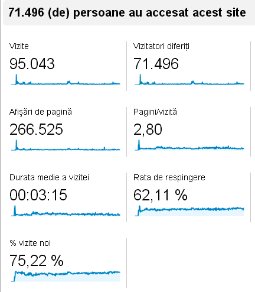

Analize şi statistici
ACRU.ro a fost lansat online pe 1 octombrie 2011. A împlinit doi ani şi trei luni de existenţă în spaţiul virtual pe 1 ianuarie 2014. Iată rezultatele cuantificabile pe care site-ul le-a obţinut până în momentul în care echipa editorială a hotărât suspendarea proiectului, adică până la finalul anului 2013.
Evaluare calitativă
Din punct de vedere calitativ, luând în considerare peste 50 de indicatori, am fost primii în România la începutului anului 2013, cu un scor de 11,49, în condiţiile în care media site-urilor autohtone era de aproximativ 5 puncte, pe o scală de la 0 la 20. Concluzia aparţine ISOWQ – Studii Internaţionale ale Calităţii Site-urilor Web, un proiect european care monitorizează conţinutul Internetului, realizând măsurători comparative după algoritmi specifici.
{kind=link}
Analiza calităţii site-urilor .ro - ACRU.ro, locul 1
Clasamentul calităţii e alcătuit pe baza unor criterii precum: accesibilitatea, lizibilitatea, originalitatea conţinutului, respectarea standardelor W3C, siguranţa, optimizarea, viteza, protecţia anti-spam, facilitatea navigării, raportul dintre text, imagini şi HTML. ACRU.ro a obţinut locul 1 în rândul site-urilor româneşti (din ianuarie 2013) punctând, în special, la parametrii originalitatea textului, format şi lizibilitate (14,41). Optimizarea şi conformarea la standardele în vigoare au fost notate cu 13,14. La marketing stăm cel mai slab, specialiştii ISOWQ calculându-ne un chinuit (dar meritat!) scor de doar 6,91. Datele pot fi verificate aici.
Evaluare cantitativă
Rezultatul analizei cantitative e departe de performanţa obţinută la testul calităţii. Însă, e consecinţa unor strategii oneste de creştere organică. Fără vizite plătite, fără roboţi care simulează traficul uman, fără aplicaţii forţează utilizatorii să dea like, fără sute de fani din Bangladesh, cum e moda.
Dacă ne amintim ce audienţă obţin emisiunile mondene sau ce tiraj au tabloidele, apoi le raportăm la calitatea produsului livrat, ne dăm seama că diferenţa calitate-cantitate e firească. Deşi n-au fost suficient de numeroşi încât să justifice continuarea muncii şi a investiţiei, le mulţumim celor peste 71.000 de oaspeţi care ne-au trecut pragul electronic cel puţin o dată într-una dintre cele 27 luni de când bursa de idei acre s-a deschis.
În primele cinci săptămâni ne-au găsit doar vreo douăzeci de rătăciţi. Apoi, începând cu mijlocul lunii noiembrie 2011, traficul a început să crească. După doi ani şi un trimestru, vizitatorii noştri unici au fost de aproape patru ori mai mulţi decât numărul de voturi cu care Victor-Viorel Ponta a devenit deputat la alegerile legislative din decembrie 2012. Sau de două ori mai puţini decât strânge într-un singur trimestru un site care publică “poze sexi cu violatoarea de taximetrişti de la Tulcea” şi interviuri în care victima doctorului Ciomu “rupe tăcerea” în bucăţi. Depinde la ce variabile ne raportăm.
Unii dintre musafiri ne-au devenit abonaţi şi cititori fideli. Acestora le mulţumim în mod special.
Iată cum a arătat ACRU.ro în cifre, conform Google Analytics (date valabile la 1 ianuarie 2014):

Cifrele relevante pentru perioada 1 octombrie 2011 – 1 ianuarie 2014, inclusiv distribuţia vizitatorilor pe ţări (din care puteţi deduce că nu ne-am obosit să invităm şi roboţeii pe la noi) pot fi consultate aici (format PDF).
{kind=link}
Comments on this entry are closed.